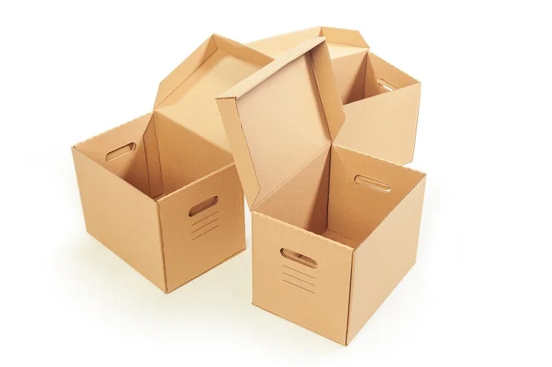
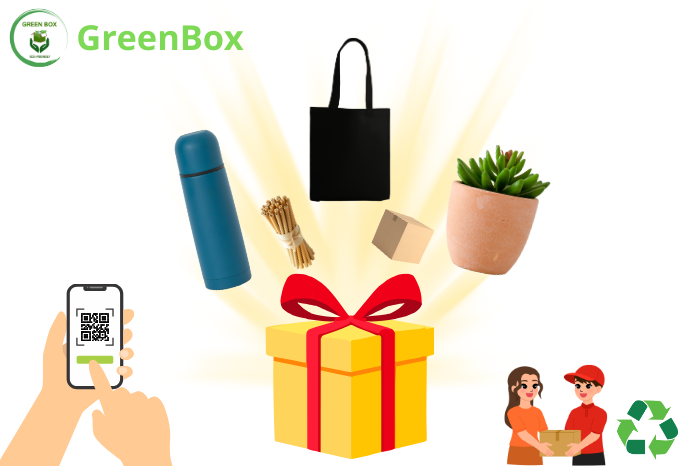

CÁCH BẠN CÓ THỂ THAM GIA CÙNG GREENBOX – ĐỔI HỘP LẤY QUÀ
Một chiếc hộp carton tưởng chừng vô giá trị nhưng nếu tham gia cùng GreenBox, bạn có thể biến nó thành điểm thưởng và quà tặng. GreenBox thiết kế cơ chế “Đổi hộp lấy quà” nhằm khuyến khích cộng đồng cùng tham gia vào quá trình tái sử dụng.

Cách tham gia rất đơn giản
- Thu gom hộp carton sau khi sử dụng, giữ nguyên hình dạng càng tốt.
- Mang hộp đến điểm GreenBox (tại trường đại học, cửa hàng tiện lợi, hoặc đối tác thu gom).
- Quét mã QR để ghi nhận số hộp trả lại.
- Tích điểm đổi quà: Mỗi hộp tương ứng một số điểm nhất định, đủ điểm bạn có thể đổi voucher, sản phẩm xanh hoặc quà tặng hấp dẫn.

Lợi ích khi tham gia
- Tiết kiệm chi phí: Doanh nghiệp và người dùng đều giảm chi phí bao bì.
- Bảo vệ môi trường: Tái sử dụng giúp giảm lượng rác thải carton (ước tính mỗi 1 tấn hộp tái sử dụng giúp tiết kiệm 17 cây xanh).
- Nhận quà tặng thiết thực: Từ voucher mua sắm, đồ dùng xanh đến quà lưu niệm.

Triển khai thực tế
Hiện tại, GreenBox đã triển khai thử nghiệm tại các trường đại học ở Cần Thơ, dự kiến mở rộng ra toàn thành phố trong năm đầu tiên. Mục tiêu là xây dựng mạng lưới 50 điểm thu hồi trong vòng 2 năm và tăng tỷ lệ tái sử dụng hộp carton lên 40–50%.
Bạn có thể bắt đầu ngay hôm nay. Chỉ cần giữ lại hộp carton sau khi mua hàng và tham gia cùng GreenBox, bạn đã góp phần nhỏ nhưng ý nghĩa cho một Cần Thơ xanh hơn, bền vững hơn 🌱.